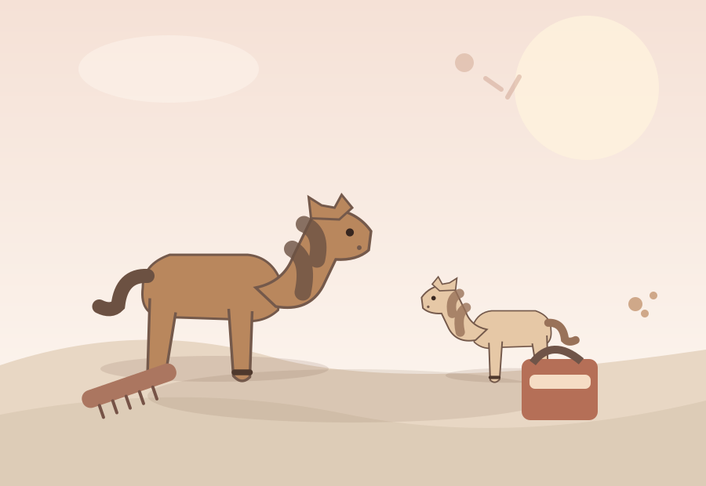

Ein Pflegeset, eine Pferdebox oder gleich ein Reiterhof? Wenn Kinder Pferde lieben, kommt es nicht auf das größte Paket an – sondern darauf, womit sie gern spielen.
Manche Kinder pflegen am liebsten Pferdefiguren. Andere bauen Ställe und denken sich Geschichten aus. Mit dieser kleinen Entscheidungshilfe findest du leichter den passenden Einstieg.
Hier sind drei konkrete HORSE CLUB Sets. Die Bilder sind redaktionelle Illustrationen, keine Fotos der Artikel. Die Amazon-Links führen zum jeweiligen Produktangebot; Preis und Lieferumfang können sich ändern.

Illustration · kein Produktfoto
Für kleine Pferdegeschichten
Schleich HORSE CLUB Sarahs Tierbaby-Pflege 42432
Bei diesem Set dreht sich vieles ums Versorgen und Pflegen von Tieren. Eine gute Richtung für Kinder, die mit Figuren lieber Geschichten nachspielen, als große Gebäude aufzubauen.
Passt eher, wenn:Das Kind gern Tierbabys versorgt oder ein überschaubares Pferdethema als Geschenk sucht.: Das Kind gern Tierbabys versorgt oder ein überschaubares Pferdethema als Geschenk sucht.
Ab etwa 5 Jahren eingeordnet. Bitte die verbindlichen Altershinweise und den enthaltenen Lieferumfang beim Hersteller oder Händler prüfen.
Schleich HORSE CLUB Pferdebox mit Stute und Fohlen 42611
Eine Pferdebox bringt einen festen Spielort dazu. Das kann sinnvoll sein, wenn schon einzelne Pferde im Kinderzimmer stehen und bisher ein Stall zum Unterbringen fehlt.
Passt eher, wenn:Bereits Pferdefiguren vorhanden sind oder kleine Stallgeschichten besonders beliebt sind.: Bereits Pferdefiguren vorhanden sind oder kleine Stallgeschichten besonders beliebt sind.
Die Box ist ein Spielset, kein vollständiger Reiterhof. Zubehör und Figuren beim aktuellen Angebot prüfen.
Hier geht es nicht nur um einzelne Pferde, sondern um eine ganze Hofwelt: mit Pferdeboxen, Pferden und Platz für wiederkehrende Rollenspiele rund ums Versorgen und Reiten.
Passt eher, wenn:Das Kind häufig mit Pferden spielt, größere Spielwelten mag und genügend Platz vorhanden ist.: Das Kind häufig mit Pferden spielt, größere Spielwelten mag und genügend Platz vorhanden ist.
Der Hersteller beschreibt das Set unter anderem mit drei Pferden. Bei Amazon bitte Variante, Ausstattung, Altershinweise und Preis prüfen.
Hinweis: Als Amazon-Partner verdiene ich an qualifizierten Verkäufen. Alle drei Kaufbuttons sind Werbelinks. Preise, Verfügbarkeit und Lieferumfang können sich ändern. Für Alter und Sicherheit gelten die Angaben des Herstellers.